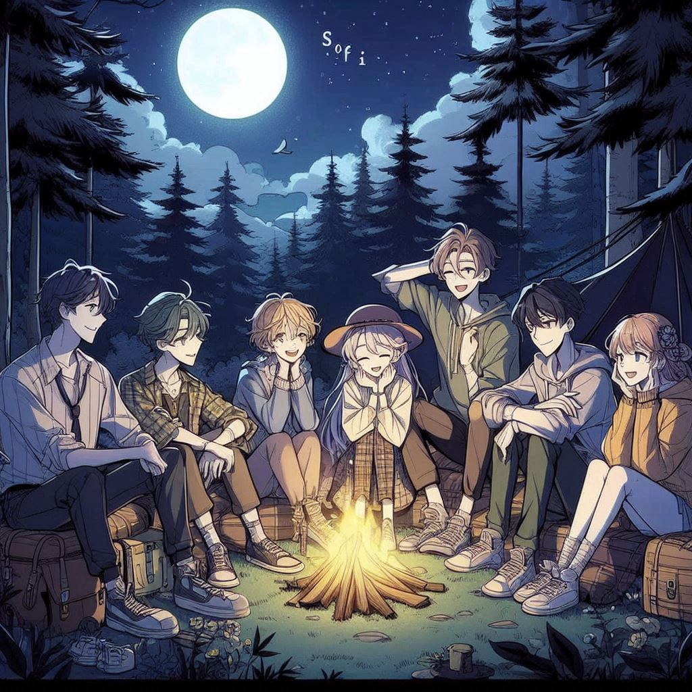
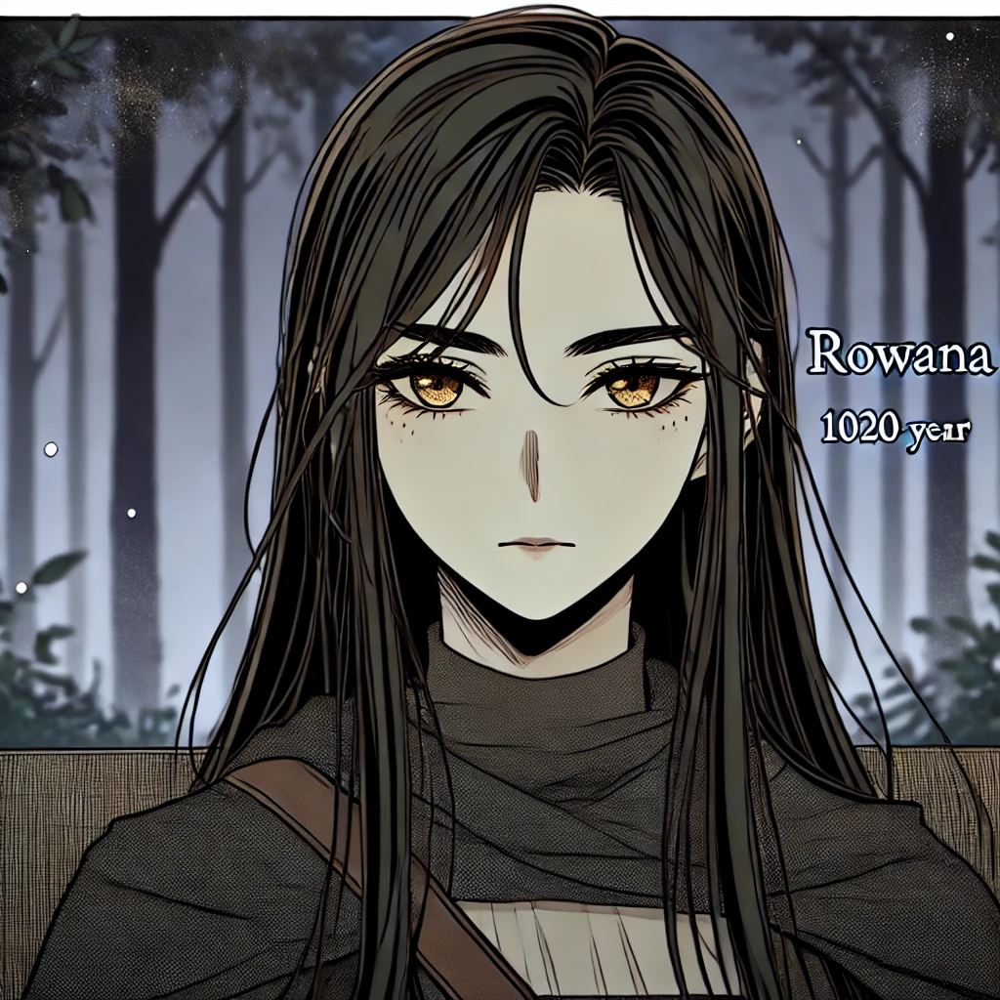
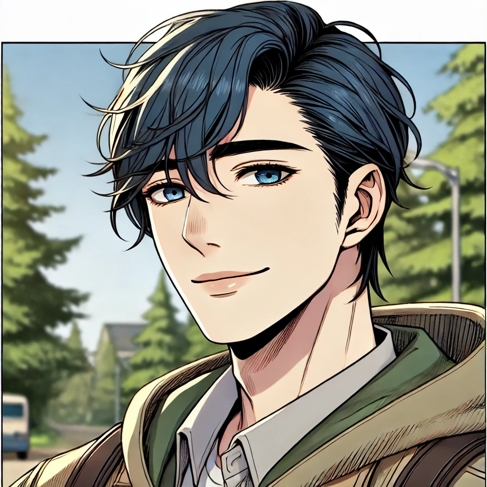
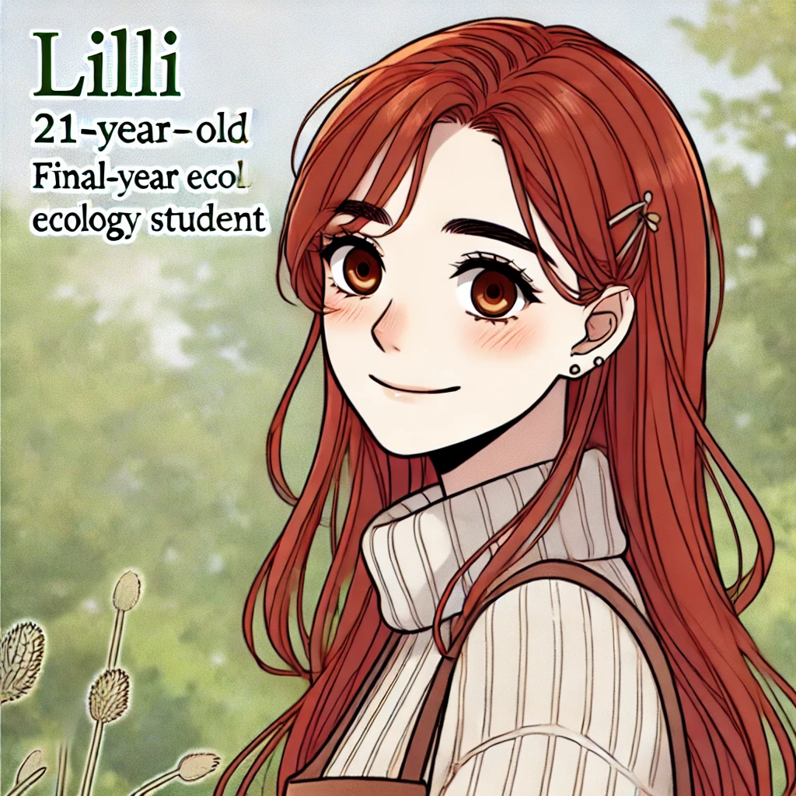
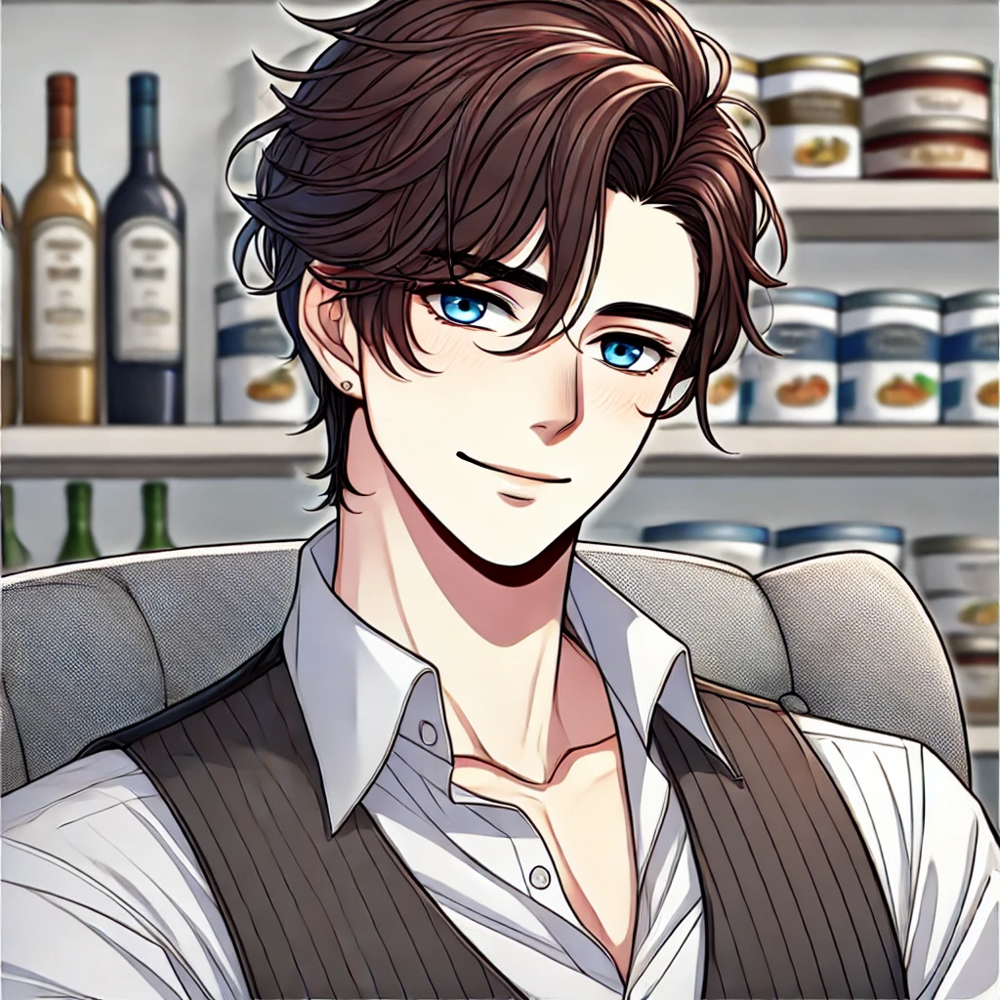
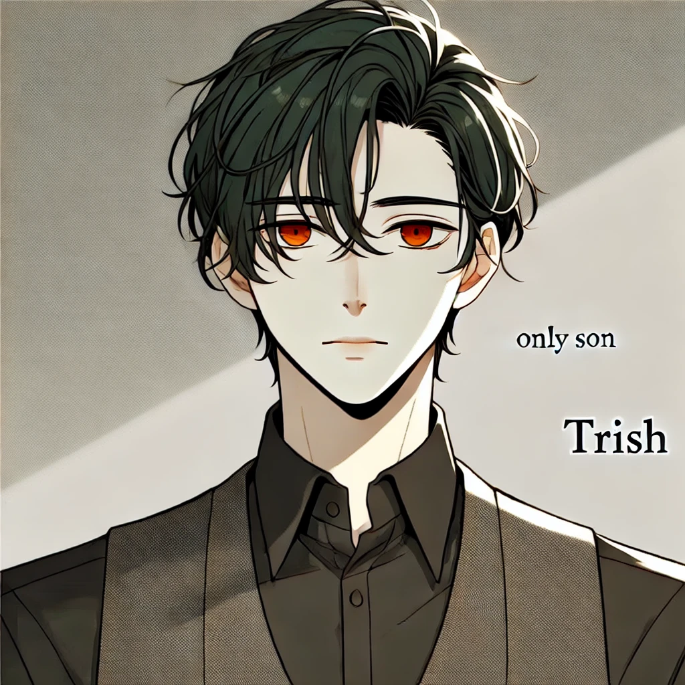
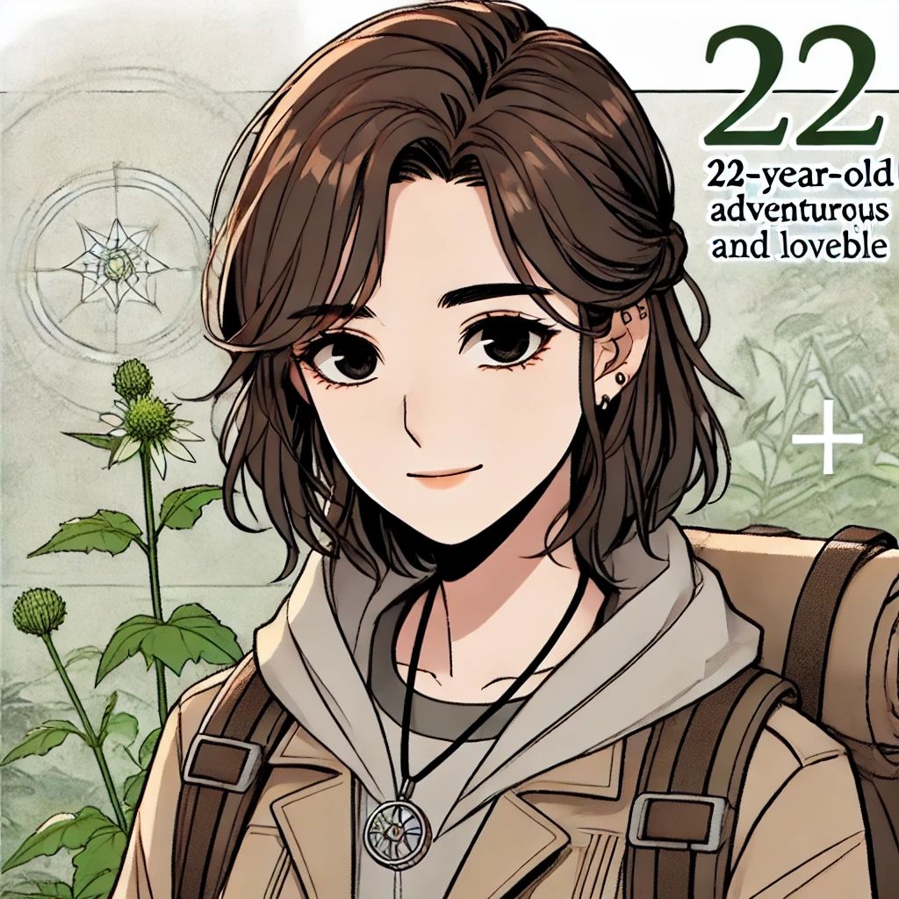

Rowana and Shelly found themselves exposed in front of the campers in the middle of the forest. With no other option, they had to step forward and face them. Joseph extended his hand to Shelly, helping her up.
The group consisted of four friends who frequently camped in the mountains and forests: Joseph, Lilli, Trish, and the most peculiar one—Braddy. Lilli, Braddy’s sister, was also Trish’s girlfriend. Among them, Braddy stood out the most, his intense gaze locked onto Rowana as if trying to decipher something about her. Her golden eyes gleamed under the moonlight, making her appear even more enigmatic.
"Greetings, I am Rowi, and this is my friend Soffi. Due to some unfortunate circumstances, we lost our families in an accident, so we’ve been traveling from place to place. We ended up here purely by chance."
She carefully crafted false names and a fabricated story to protect their identities from the temple’s reach.
The group welcomed them warmly, their excitement evident at the prospect of meeting new faces—except for Braddy, who remained skeptical of Rowana’s explanation. Joseph, in particular, insisted they should stay and travel together since they had nowhere to go. At first, Rowana refused, but Shelly, noticing how much Rowana was going out of her way to protect her, stepped in.
"Rowana, staying with them for a few days won’t do any harm. You’ve been running around because of me, and I don’t want to see you waste any more time."
After some reluctance, Rowana agreed, deciding she could conceal her striking golden eyes with sunglasses when they reached town.
The group quickly grew fond of their new companions, especially Lilli, who was thrilled to finally have more female members in their crew. Meanwhile, Rowana noticed Joseph constantly flirting with Shelly, though it didn’t bother her. Shelly was enjoying herself, and Rowana had no intention of interfering with her happiness. However, Braddy remained suspicious, his eyes never straying far from Rowana, as if he were studying her every move.
As night fell, everyone retreated to their tents. Trish moved in with Joseph and Braddy, while Lilli shared a tent with Shelly and Rowana. Exhausted from the day’s adventures, the campers quickly fell into a deep sleep. But sleep did not come easily for Rowana. Restless, she sat outside by the dying embers of the campfire, gazing at the moon.

After a few minutes, she sensed a presence approaching. A shadow moved toward her—it was Braddy.
"You startled me. Why aren’t you asleep?"
"I could ask you the same thing."
Without warning, he grabbed Rowana’s wrist firmly, his expression sharp and accusing. "Who are you, really? My friends may be easygoing, but don’t take me for a fool. Your story is full of holes—no, actually, it’s complete nonsense. And this innocent girl, Soffi… You’re not using her, are you? You're not a threat to her?"
His words made Rowana’s blood boil, but she remained composed. He was like a child, throwing baseless accusations simply because something felt off.
She smiled—a smile filled with both pain and serenity. "I am not obligated to answer your questions. You’re free to think whatever you like and come to whatever conclusions suit you."
Her tone was calm, but when she spoke again, her voice grew darker, colder. "But let me warn you—don’t lay a single finger on Soffi because of me. She is like a sister to me."
Her golden eyes burned with quiet fury, her voice laced with unspoken threats. "I would kill for her. And I would die for her."
Braddy instinctively took a step back, momentarily flustered by the intensity of her words. But instead of retreating completely, he sat down across from her, resting his arms on his knees.
"You know, you’re only making yourself look more suspicious. If you have nothing to hide, why not just tell me the truth? It’s not like I’d throw you out. If survival is your goal, then stick with us."
Rowana fell silent for a moment. The stillness was unbearable for Braddy, but he waited. Finally, after what felt like an eternity, Rowana spoke.
"It’s something beyond human understanding."
"You talk like a deity who’s lived for a thousand years." He chuckled, trying to lighten the mood.
But when Rowana didn’t respond—her golden eyes locked onto him with an unreadable expression—his laughter faded. A strange realization settled over him. Had he unknowingly struck upon the truth?
He wasn’t sure what it was, but something inside him warned him not to pry any further. With a quiet sigh, he rose to his feet.
"You should rest," he said, offering her a small nod before retreating to his tent.
Rowana watched him leave, a faint smirk tugging at the corner of her lips. He was perceptive—more than most. Unlike others who followed blindly, Braddy knew how to think for himself.
The next morning, the group set off toward a nearby town, planning to stay for a few days and enjoy the famous festival being held there.
Rowana concealed her golden eyes behind a pair of sunglasses. Lilli, ever the curious one, questioned her about them.
"What’s with the shades, Rowi?"
Rowana smiled, effortlessly weaving a story. "My eyes are sensitive to direct sunlight. I get bad irritation if I don’t wear these."
Lilli accepted the explanation without suspicion, and the journey continued.
It was a new day, a new destination. But neither Rowana nor Shelly had any idea of the trials that awaited them in town.

Name: Rowana (Rowi)
Age: 1020 years
Hair Color: Medium-length black hair
Eye Color: Golden
Occupation: Recently released from a divine cage, now on the run seeking peace with Sofi
Personality: Once a faithful devotee, now driven by revenge against the gods. She desires to give Sofi a better life. She is mature, reserved, and chooses her words carefully, rarely speaking unless necessary.

Name: Braddy
Age: 25 years
Hair Color: Dark blue
Eye Color: Gray
Occupation: Helps run his father’s shop, enjoys camping and traveling to different towns, and is preparing to become a government official
Personality: Focused, intelligent, thoughtful, and has a charming smile. He is helpful and has a strong sense of observation. He shares a special bond with his sister, Lilli.

Name: Lilli
Age: 21 years
Hair Color: Red
Eye Color: Brown
Occupation: Final-year graduate in ecology
Personality: Cheerful and lovable, deeply in love with her boyfriend, Trish. She has a special place in her heart for her brother, Braddy, and enjoys making new connections.

Name: Joseph
Age: 25 years
Hair Color: Dark brown
Eye Color: Light blue
Occupation: Works for a private food and supply organization and is a direct investor in it using his father’s money
Personality: Flirty and joyful but turns serious and even angry in critical situations. He enjoys teasing people but knows when to draw the line.

Name: Trish
Age: 23 years
Hair Color: Dark green
Eye Color: Orange
Occupation: The only son of a departmental store owner
Personality: Quiet, observant, and lovable, similar to Lilli. He often appears unapproachable but is deeply caring once one gets to know him.

Name: Sofi
Age: 22 years
Hair Color: Brown
Eye Color: Black
Occupation: Running away with Rowi
Personality: Strong yet lovable, adventurous, and passionate about research. She has a deep love for herbs and nature, always eager to learn and discover more.
